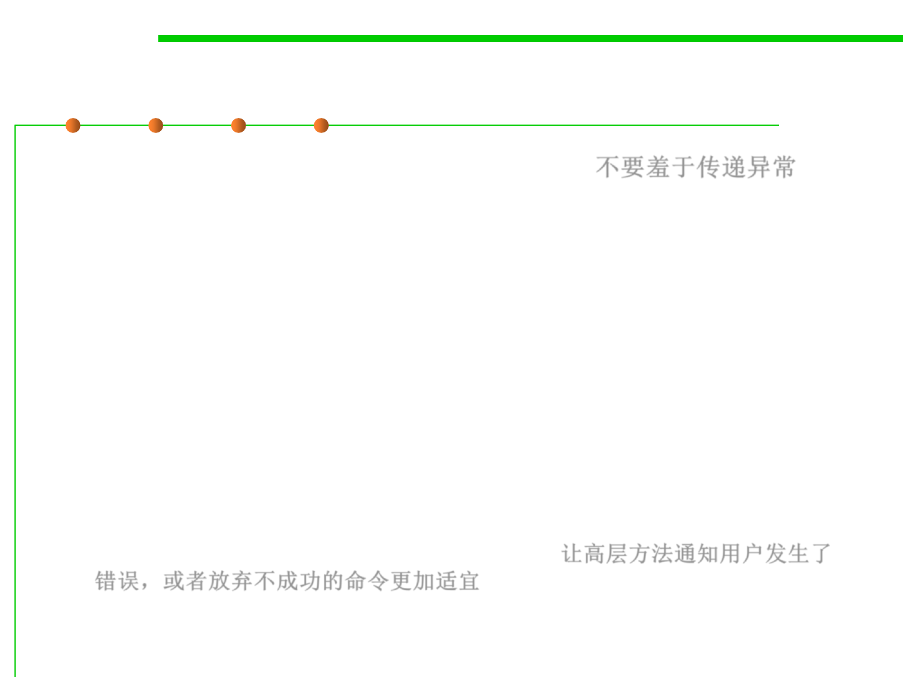

7.2 Error and Exception Handling
Propagating exceptions is not a sign of shame
▪ Propagating exceptions is not a sign of shame. 不要羞于传递异常
– Many programmers feel compelled to catch all exceptions that are thrown.
– If they call a method that throws an exception, such as the
FileInputStream constructor or the readLine method, they instinctively
catch the exception that may be generated.
– Often, it is actually better to propagate the exception instead of catching it:
public void readStuff(String filename) throws IOException
// not a sign of shame!
{
InputStream in = new FileInputStream(filename);
...
}
– Higher-level methods are often better equipped to inform the user of
errors or to abandon unsuccessful commands. 让高层方法通知用户发生了
错误，或者放弃不成功的命令更加适宜
▪ NOTE: “throw early, catch late.”